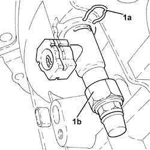
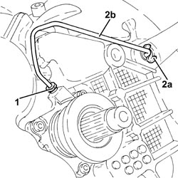
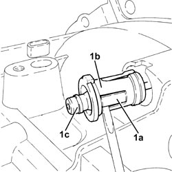
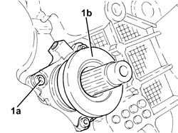
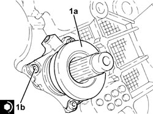

1820B38 HYDRAULIC CLUTCH ACTUATOR WITH COAXIAL CONTROL - R.R WITH GEARBOX REMOVED
- Path
- Procedures > 18 CLUTCH UNIT > 1820 CLUTCH RELEASE CONTROLS > 1820B HYDRAULIC CLUTCH SYSTEM > 1820B38 HYDRAULIC CLUTCH ACTUATOR WITH COAXIAL CONTROL - R.R WITH GEARBOX REMOVED
- Kind
- repair procedure (removal / refitting; the operation number is the code)
- Applies to
- all engines; all production periods
- Interactive page
- https://sloeber94.github.io/elrnDB-aBrrSpdr/en/#/946002050
Applies to: engines: 2.2 JTS, 2.4 JTD 20v; all production periods
 Removing
Removing
 Refitting
Refitting1. Release the retaining clip (1a) and remove the three-way connector on the clutch operating cyliner (1b).

Applies to: engines: 2.2 JTS, 2.4 JTD 20v; all production periods
1. Unscrew the fitting and disconnect the hydraulic clutch actuator rigid pipe.
2. Undo the tabs of bush (2a) and partly withdraw together with rigid pipe (2b).

Applies to: engines: 2.2 JTS, 2.4 JTD 20v; all production periods
1. Undo clips (1a), separate bush (1b) from rigid pipe (1c) and remove.

Applies to: engines: 2.2 JTS, 2.4 JTD 20v; all production periods
1. Undo the bolts (1a) and remove clutch hydraulic actuator (1b) complete with seal.

Applies to: engines: 2.2 JTS, 2.4 JTD 20v; all production periods
Refitting
Removing- Check the condition of the clutch hydraulic actuator sealing ring and moisten slightly with transmission fluid.
1. Place the hydraulic clutch actuator (1a) in position and secure it tightening the bolts (1b) to the recommended torque.
Component | Fastening | dia | Value (daNm) | Validity |
|---|---|---|---|---|
Hydraulic clutch actuator | Bolt | - | (gearbox side) 0.6 - 1.2 |

Applies to: engines: 2.2 JTS, 2.4 JTD 20v; all production periods
- Refit a new bush in its seat on the gear casing until it can be heard to click into place.
- Refit the rigid pipe in its seat and insert into the bush until it can be heard to click into place.
- Connect the rigid pipe to the hydraulic clutch actuator and tighten the fitting to the specified torque.
Component | Fastening | dia | Value (daNm) | Validity |
|---|---|---|---|---|
Hydraulic clutch actuator rigid pipe | Connector | M12 | (actuator side) 1.7 - 1.9 |
- Refit the three-way connector on the clutch operating cylinder and secure it with the retaining clip.
Applies to: engines: 3.2 JTS; all production periods
- Refer to